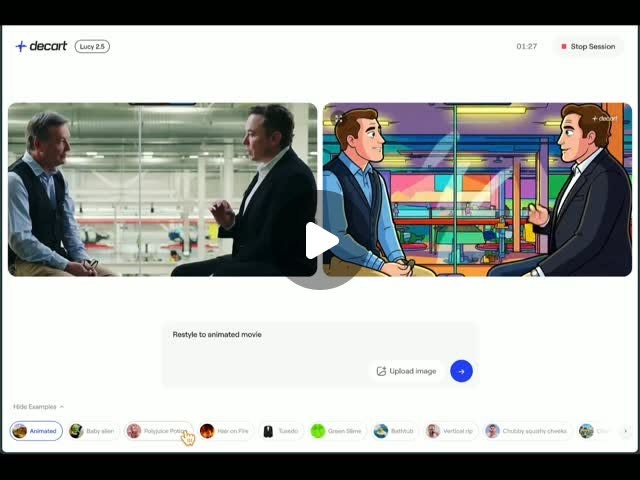

Threads｜Lucy 2.5 即時影片編輯與 OBS 虛擬相機體驗
來源是 Prompt Case 在 Threads 分享的 Lucy 2.5 教學貼文，主張這是一個可免費體驗的即時 Deepfake / 影片風格轉換工具，可搭配 OBS 虛擬相機使用。

公開貼文重點
貼文稱 Lucy 2.5 是以色列 AI 公司 Decart AI 開發，面向直播與影片串流，可在幾乎零延遲狀態下對畫面做 AI 轉換、特效與風格替換。留言公開連結為：`lucy.decart.ai`。
Threads 可見數據：約 2,128 次瀏覽、32 個反應、1 則留言、1 次轉發、9 次分享。
圖片 / 封面 OCR
封面是 Lucy 2.5 網頁介面截圖：左側是真人訪談畫面，右側是轉成動畫風格的版本，中間有播放按鈕。頁面左上顯示 `decart` 與 `Lucy 2.5`，右上有 `Stop Session` 與計時 `01:27`。輸入框可見 prompt：`Restyle to animated movie`，底部有範例 chip：`Animated`、`Baby alien`、`Polynesian Princess`、`Hide on Fire`、`Tuxedo`、`Green Slime`、`Bathtub`、`Vertical city`、`Chubby squishy cheeks` 等。
查核與補充
Decart 官方 API 平台列出 Lucy 2.5 / `lucy-2.5`，屬於 realtime model，輸入是 WebRTC video stream。官方頁面描述它可用 controlled targeted prompts 做即時影片編輯，修改特定元素並保留其他部分。
Decart 的 Lucy 2.0 介紹也說明其目標是把高擬真的影片編輯從離線渲染帶到 live interaction，支援 character swaps、motion control、product placement、clothing changes、environment transformation，並以文字提示與參考圖引導。該文描述 30fps 1080p 與近零延遲屬於 Lucy 2.0/Live AI 能力敘述；Lucy 2.5 的公開 demo / API 平台則延續 realtime video editing 定位。
OBS 官方文件確認 Virtual Camera 可把 OBS Studio scene 分享成其他應用可用的 webcam。因此「搭配 OBS 虛擬相機」在工作流層面合理，但實際穩定性仍取決於裝置、瀏覽器、WebRTC、顯卡與網路。
需要保留的風險邊界
- 貼文使用「Deepfake」語境，實作時需特別注意肖像權、同意、標示、平台政策與詐騙風險。
- 「免登入、免費、每段約 1 分 30 秒」是當下 demo 體驗描述，可能因服務政策、流量限制或地區而變動。
- Lucy 2.5 可視為即時 video-to-video / live AI demo 與 API 能力展示；若用於商業直播或廣告素材，仍需完整 QA、授權與延遲測試。